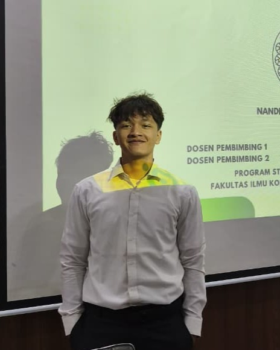

Saya memadukan logika teknis dan estetika visual untuk merancang aplikasi web modern yang cepat, indah, dan intuitif.

Mengerjakan
10+ Projek
Halo! Saya seorang UI/UX Designer dan Web Developer. Saya senang mengubah masalah yang rumit menjadi tampilan website yang simpel, rapi, dan mudah digunakan.
Selain fokus membuat desain yang minimalis dan kode yang efisien, saya juga selalu antusias untuk mempelajari teknologi IT terbaru, termasuk Kecerdasan Buatan (AI).
Koleksi proyek terbaik yang telah saya kerjakan. Menampilkan dedikasi pada detail desain dan kualitas kode.
Apakah Anda memiliki ide proyek besar, atau sekadar ingin menyapa? Saya selalu terbuka untuk mendiskusikan peluang baru.